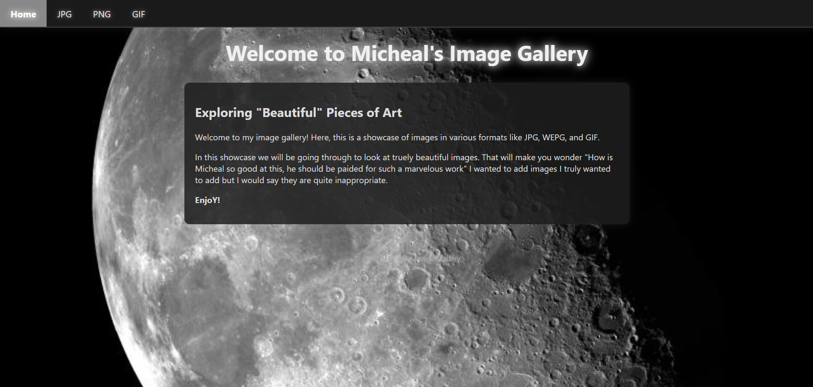
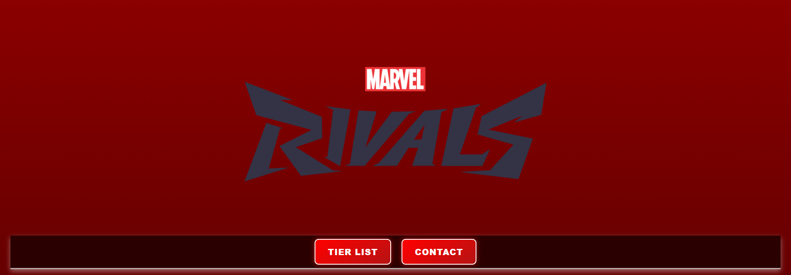
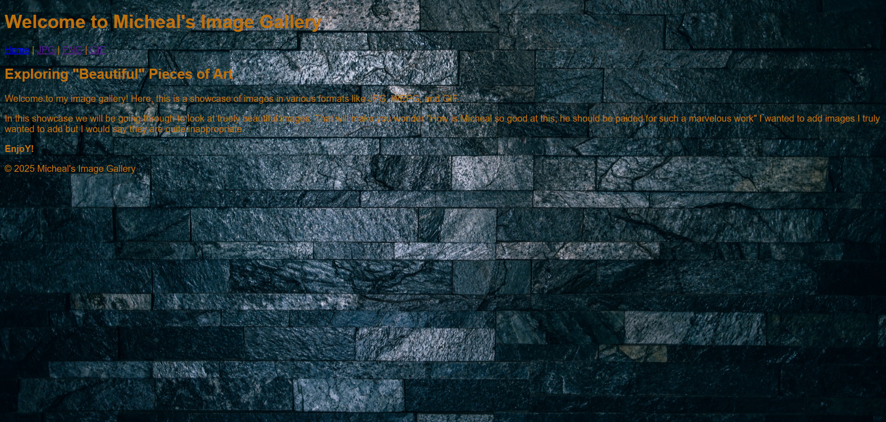
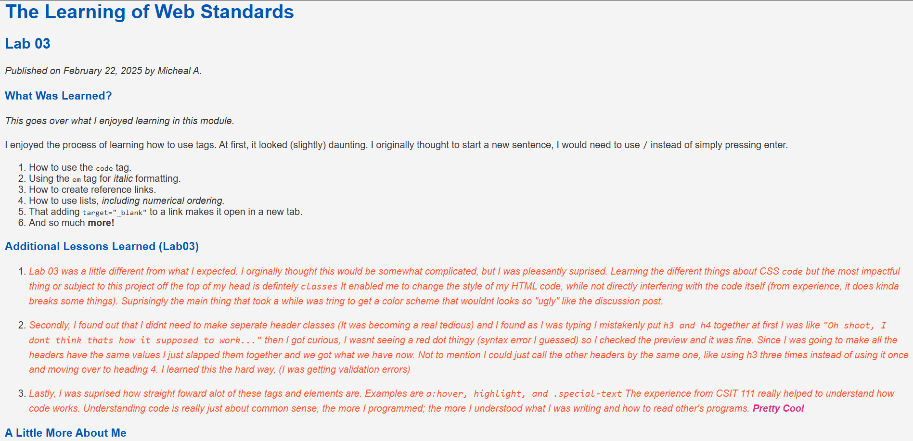
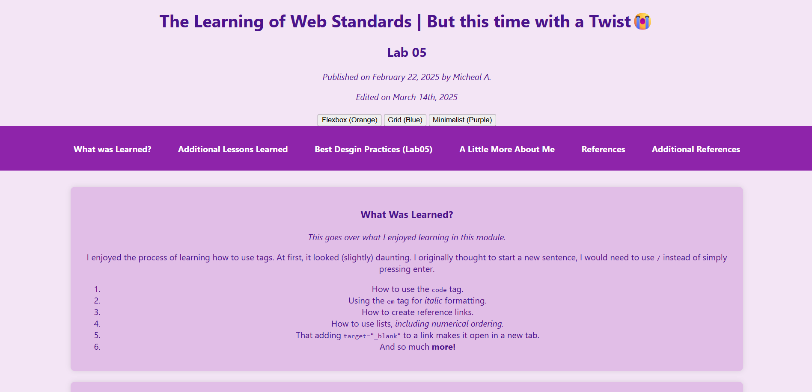

Project Tier List
Below is a tier list ranking my favorite web development projects this semester. These are ranked based on how much I enjoyed building them!
The stars are indicators for how I much I liked them, more like a ranking.
| Tier | Screenshot | Why I Enjoyed It | Live Page |
|---|---|---|---|
| ⭐⭐⭐⭐⭐ |  | I loved this one because I was able to revamp the previous one I had made, it was so satisfying to see much I have learned since the beginning of the semester. The changes are defintely noticeable and maybe minor to some people but it was something I felt so | View Project |
| ⭐⭐⭐⭐ |  | This project, I probably had the most fun working on. Mainly because I was able to speak on the videogame I was fasincated by. | View Project |
| ⭐ |  | It was fun to work with background images in an HTML file for the first time. I could not make it as visually appealing as I hoped for it to be, but I was happy with the little understanding | View Project |
| ⭐⭐⭐ |  | This was where I first started using CSS to style a webpage for the first time. Quite the experience I have to say. |
View Project |
| ⭐⭐⭐⭐ |  | This is the one above but incredibly better, though I remeber it being "painful" to do as it was the first time doing something like that but it was fun. | View Project |